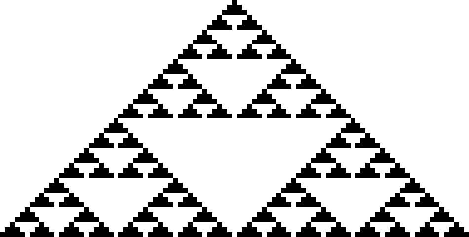

Koan 5: More of the Same Can Be New
For Koan 5, I have chosen to create an image of the Sierpinski Triangle.
It appears to be an image of one singular triangle initially, however as you inspect further you will find it is made of increasingly smaller and smaller triangles.
I find this to be a good demonstration of this Koan, as three of the same triangle can join together and form a new, larger triangle.
